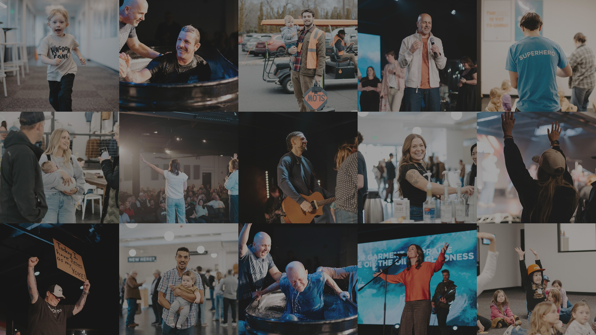
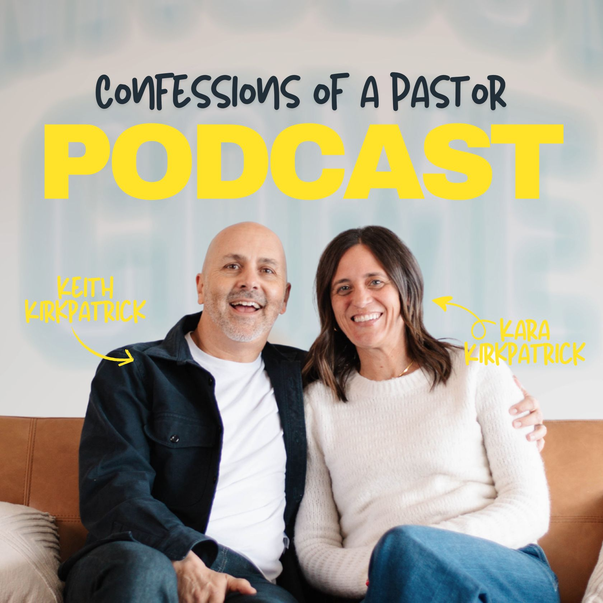
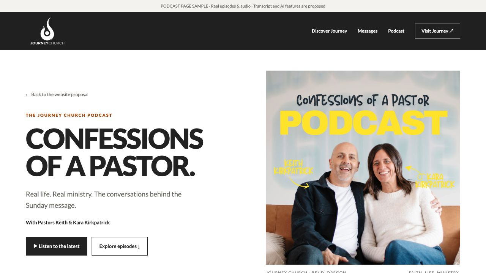
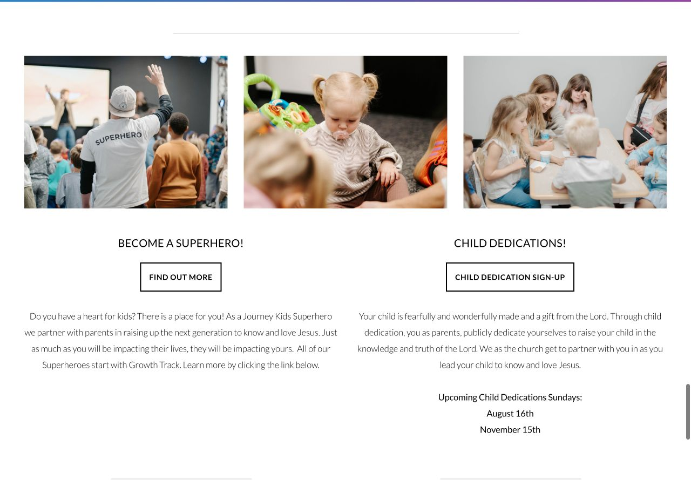
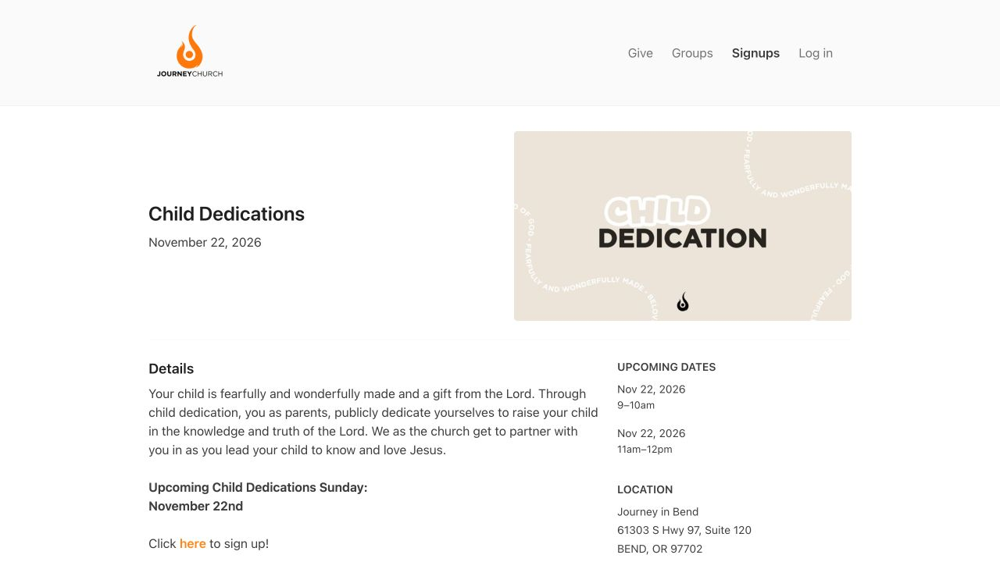
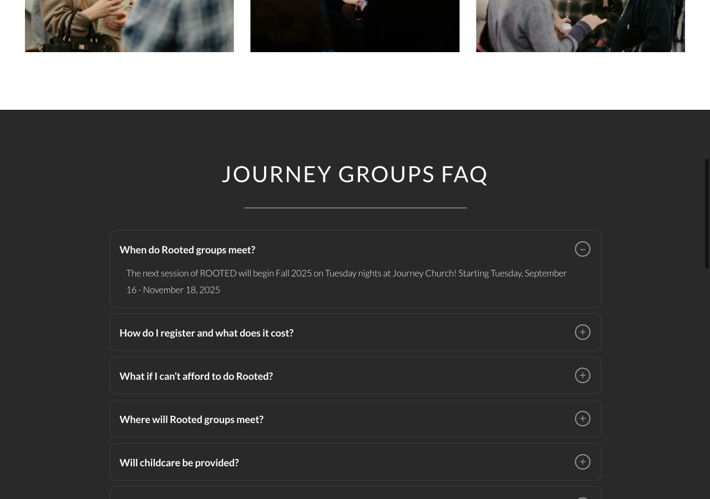
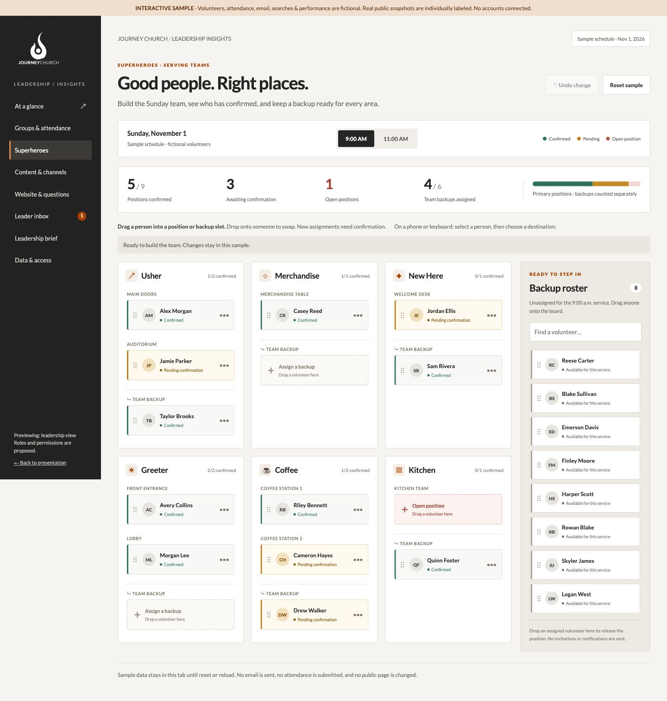
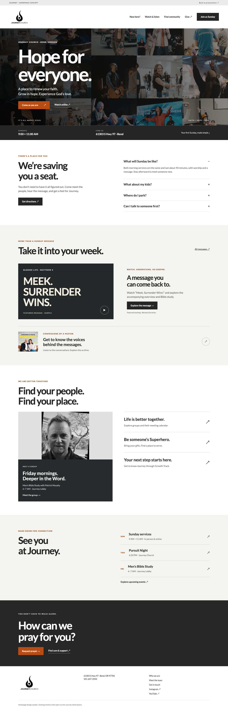
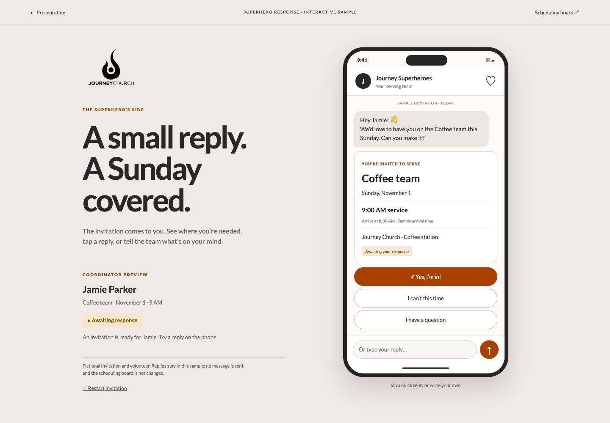
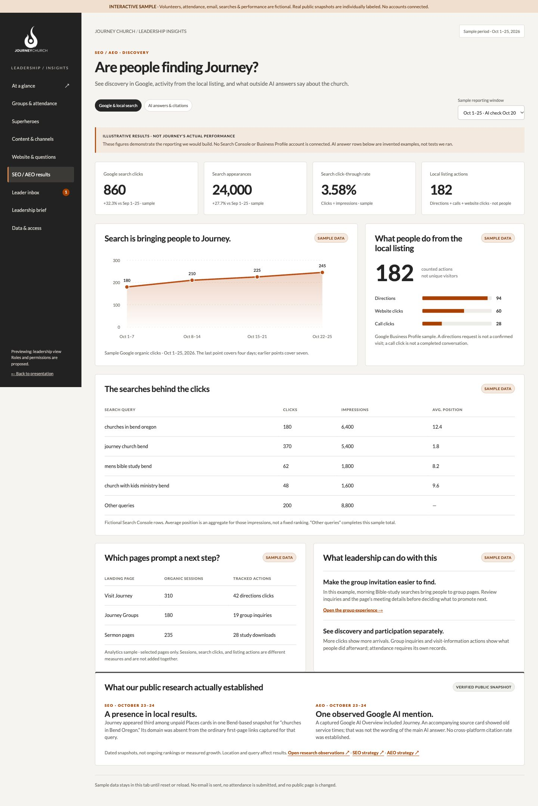

A better experience of Journey
Show the real church. Help a family prepare for Sunday, introduce a group through its leader and meeting details, and give events an invitation worth responding to.
A distinctly Journey website that helps people discover the church, use its teaching, find community, and stay connected throughout the week.

Journey’s people, teaching, and community—connected in one useful website.
Explore the proposal →Show the real church. Help a family prepare for Sunday, introduce a group through its leader and meeting details, and give events an invitation worth responding to.
Play the sermon on Journey alongside an overview, actual transcript, study guide, related teaching, and questions answered from the source.
Ask Journey in ordinary language. Find relevant church information and teaching, get a sourced answer, and continue with a follow-up.
Prepare new sermon content, keep approved search information current, and check the website daily. Give the agency specific problems to act on.
The proposal connects the public experience, SEO, AEO, content, integrations, and ongoing agent support. The following sections show what we would build and what it would make possible.
Build the new experience with Journey’s actual branding, real photography, clear navigation, and pages that work well on a phone.
Service times, directions, parking, entrances, kids check-in, and what to expect.
Beliefs, leadership, church life, stories, contact information, and the Redmond connection.
Live services, sermons, Confessions of a Pastor, series, transcripts, summaries, and study guides.
Groups, ministries, serving, Rooted, Growth Track, and opportunities to get involved.
Calendar, event pages, people, schedules, and registration where needed.
Support options, human contacts, and private prayer or care requests.
Use the real Journey logo, Lato typography, charcoal, white, and the existing orange accent. Let photographs of Journey’s people and spaces lead the design.
A message links to its series and study. A group links to its meeting calendar and leader. An event links to its ministry. Visitors can continue from the information that brought them there.
Carry forward ministries, giving, forms, care, prayer, registration, media, documents, and useful archives. Preserve existing links or redirect them to the appropriate new page.
The migration includes Kids, Youth, Young Adults, Men, Women, Outreach, Worship, Internships, Kingdom College, baptism, child dedication, missions, partner information, and app guidance. The public audit is a starting inventory; Journey’s full content and provider access will establish the final migration list.
The rebuild brings the parts together while keeping the services people already rely on.
Make the practical questions easy to answer before someone arrives.
Put service times, location, directions, parking, and actual entrance photos together. Make directions and calendar saves available without an account.
Bring Journey’s existing kids guidance into the visit experience: age groups, where check-in happens, what parents need to know, and who can answer a question.
Use real welcome content, leadership information, beliefs, and a clear explanation of what a service is like. Include confirmed accessibility information.
Journey already has useful visitor and Kids information. The new site presents it together, with photography and practical actions that make a first visit easier to prepare for.
Research & references: Existing Visit page ↗ · Existing Kids guidance ↗
Keep distributing through YouTube. Let people watch, read, study, and explore the message on Journey’s own website.

A full sermon page with the actual video and supplied study content. Open the sample to see the overview, study guide, transcript concept, and source-linked question examples.
Open sermon sample ↗Embed the original video in a dedicated message page. Show the speaker, date, series, and Scripture references, with related messages available nearby.
Give people a concise summary and the spoken message in readable text. Timestamped passages let someone return to the relevant moment in the video.
Add a study guide and discussion questions. Connect the material to a relevant group, including the Friday men’s study discussed in this proposal.
Let a visitor ask a question and retrieve an answer from the approved transcript and study material, with a link to the supporting passage.
A permanent page serves people who want to watch, skim, study, or search. It also gives search engines and Ask Journey readable teaching to retrieve.
The video is real and the overview uses the supplied study guide. The transcript is visibly pending; the question interaction demonstrates the proposed experience, not a connected AI service.
Give the existing podcast a permanent home on Journey, where people can listen, get to know the pastors, and explore the conversations.

Hosted by Keith and Kara, the show explores life and ministry at Journey in Bend. Its role in the new site is personal connection, conversation, and a reason to keep listening between Sundays.
Build a dedicated show page under Watch & Learn → Podcast, with a latest-episode player, a browseable archive, host introductions, and links to follow in a preferred podcast app.

Open the podcast sample with real audio, all 63 published episodes, searchable titles and notes, season filters, and individual episode links. Transcript and connected AI features are marked as proposed.
Open podcast sample ↗Listen on Journey with an audio player, published date, duration, hosts or guests, show notes, and related episodes. Add a reviewed summary, actual transcript, and chapters tied to real timestamps. Offer video only when the matching official recording is verified.
Browse by topic, season, or guest. Ask Journey can retrieve approved podcast transcripts alongside sermons, label the source as a podcast conversation, identify the speaker, and link to the relevant moment.
Feature the latest episode in This Week and introduce selected conversations from leadership and About pages. Link relevant episodes to groups, teaching, or church stories where the content genuinely connects.
Send episode links from social and email to the Journey episode page. Listeners can play there or follow in their podcast app. Readable transcripts and original summaries give SEO and AEO another set of useful official pages.
What Pastors Wish Everyone Knew ↗ could be a listening recommendation from the leadership page.
What Really Happened at Church In The Park ↗ could accompany a church-life story or event recap.
Could Men Be The Solution To A Move Of God? ↗ is a candidate for the Men’s page after content review—not an assertion that it is Patrick’s assigned study.
These connections are recommendations based on publisher descriptions; the recordings have not been editorially reviewed for these placements.
The podcast adds a personal, ongoing relationship with the church’s leaders. Its archive can become something people find, read, ask about, share, and return to on Journey’s own site.
The public RSS.com feed contains 63 episodes. The latest listed is “Life Change and Freedom,” September 22, 2026. Recent publication dates vary; we should not promise a weekly release schedule. The host links to Apple Podcasts, Spotify, Amazon Music, and other listening apps.
The feed supplies episode identifiers, titles, dates, descriptions, artwork, durations, and audio files. No transcript links were present in the inspected feed. Obtain existing transcripts from Journey or generate them from authorized audio and review them. A subsequent October 26 check found an official Confessions of a Pastor playlist on Journey’s YouTube channel, including Life Change and Freedom, What Really Happened at Church In The Park, and We Refuse to Settle. Confirm the episode-to-video mapping before importing the full video archive.
Research & references: Verified RSS feed ↗ · Official hosting page ↗
Natural-language search is part of the core website build, with an editable knowledge library behind it.
“Find Journey messages about forgiveness.”
“What should I know before bringing my kids?”
“Is there a men’s group early on Friday?”
The search retrieves relevant approved pages, group and event information, sermon and podcast transcripts, and study material before composing its answer. This is retrieval-augmented generation: RAG.
Each answer links to its supporting material. Sermon results can open a relevant timestamp when the transcript supports it. People can ask a follow-up or continue to the page, group, event, or contact.
The agency and authorized Journey staff can add, edit, replace, or remove information. Agents can refresh approved sources. Updates flow into search; removed material is removed from retrieval and affected cached answers.
If the approved material cannot answer the question, show useful results or a human contact. Private prayer, care, donor, and member records stay outside public search. Podcast remarks remain attributed and dated; they do not override current official service details or Journey’s published beliefs.
Someone can describe what they need instead of guessing a ministry label or sermon title. The same approved content supports both the website and the answer.
Staff approve the source material and generated teaching drafts, not every visitor question. Search composes answers from that collection when asked. Standard search results remain available if the AI service is unavailable.
Bring group discovery onto Journey with useful details, people, and a calendar.

Men’s Bible Study · Fridays, 6–7 a.m. · Journey Lobby. A group of men going deeper into Scripture alongside Sunday’s message, with Patrick’s photo and direct contact.
Open Patrick’s page ↗Browse and search by audience, day, time, and location. Switch between a directory and a calendar. Include the groups missing from the public listing after confirming them with Journey.
Show the leader, photo, group purpose, meeting place, format, and contact. Include confirmed availability, childcare, and accessibility details where relevant.
Display meeting dates and schedule changes, including cancellations or breaks. Connect a group to its weekly study or relevant sermon so members can prepare.
People can compare options, see whether a meeting fits their life, and contact a real leader. Existing members gain a useful place to find the next gathering and study.
Research & references: Directory sample ↗ · Calendar sample ↗
Connect Sunday teaching, weekly news, ministries, and events so people can find and use them throughout the week.
Bring together the latest message, podcast episode, study guide, upcoming events, announcements, and next steps. Give regular attendees one place to check what is happening now.
A sermon clip leads to the full message and study. An event post leads to the complete event page. Email links take people directly to the relevant content.
Show real Journey stories with links to the ministry, serving opportunity, or teaching involved. Let someone who connects with a story see how to get involved.
Use the source recording and approved information to prepare sermon summaries, study drafts, and newsletter or social drafts. Journey reviews generated teaching and public messaging before publication.
The material Journey already produces can support learning, participation, and return visits. Automation prepares and connects that material; it does not require a new staff bureaucracy.
These screenshots show public inconsistencies. They do not establish how Journey’s CMS, staff assignments, or integrations work.


Proposed response: use the confirmed event date across the new site and have the daily agent flag conflicting public dates for review. A supported provider connection could supply that date; access remains to be verified.

The groups FAQ described Fall 2025 as the next session.
Proposed response: show the next confirmed opportunity and have the daily agent flag past invitations still presented as upcoming.
Source ↗Focus on local church discovery, useful ministry pages, and the teaching Journey already produces.
Journey appeared third among unpaid Places cards for “churches in Bend Oregon” in one Bend-based snapshot, behind New Hope and Pine Hills.
Journey’s own domain was absent from the ordinary first-page links captured for that query. Branded searches did surface deeper Journey pages.
The sampled crawl found dead story URLs in the sitemap and thin or empty destinations. No JSON-LD was found in 62 successful HTML pages. Google and the site showed different suite numbers.
These are dated observations, not a ranking trend. Search Console, analytics, and Business Profile performance data were not available; current traffic and conversion baselines remain unmeasured.
Align Journey’s website and Google Business Profile around the correct address, entrance, service information, and official identity. Add useful local photography and accurate visit details. Build a strong Home and Visit experience for people searching for a church in Bend.
Make Kids, Youth, Groups, and Events complete destinations with practical details and a clear action. A search such as “men’s Bible study Bend” should be able to reach a real group page with a schedule and contact.
Create permanent sermon and podcast episode pages with readable summaries and transcripts, useful titles, speaker information, and links to related content. Build topic collections only where Journey’s actual teaching supports them.
Retain useful URLs or redirect them to the closest replacement. Clean the sitemap, make content crawlable, add appropriate structured data, and deliver fast pages that work on phones.
Establish the baseline with Search Console, analytics, and Business Profile access. Review non-branded searches, landing-page traffic, local visibility, directions, and group or event actions. Improve pages where people show interest but cannot find what they need.
The intended change is broader local discovery and more relevant arrivals—not simply more traffic to the homepage. Rankings depend on competition, proximity, and other factors; the proposal does not promise a position or percentage lift.
Research & references: Dated search observations ↗ · Verified findings ↗ · Google local ranking guidance ↗
Make Journey’s official information easy to find, understand, and cite when someone asks an outside AI service a question.
A Google AI Overview for “non denominational churches in Bend Oregon” included Journey.
A Journey source card below the result showed 8:30 / 10:30 / 12:30, while the website showed 9 / 11. This was the card, not the main AI narrative.
The research did not establish Journey’s citation rate in ChatGPT, Perplexity, or other assistants. One Google result cannot stand in for all of them.
Publish direct, useful answers about visiting, kids, beliefs, leadership, location, service times, and getting involved on the relevant official pages. Support those answers with real details rather than generic church copy.
Reconcile repeated service times, outdated invitations, duplicate FAQs, and owned profile details. Give search services a consistent official answer to retrieve.
Publish real sermon and podcast transcripts and clearly distinguished summaries with speaker, date, and permanent links. Attribute conversational remarks to their speaker and episode; use Journey’s official pages for current policies and beliefs. Let an assistant find the original teaching instead of relying on a title or an unrelated description.
Use consistent church identity, official profile links, readable page text, internal links, and appropriate structured data. Follow search indexing requirements; there is no special AI file that guarantees inclusion.
Record whether Journey appears for relevant questions, whether the answer is accurate, and which source it cites. Compare dated observations across services and use errors to identify public information that needs attention.
The goal is accurate representation and useful citations back to Journey. We can improve the source material and monitor results; we cannot dictate an outside assistant’s answer or refresh timing.
AEO improves the public information outside AI services may find. Ask Journey is the RAG search we build inside the website, where we control the approved source collection.
Research & references: Dated observations ↗ · Google guidance for AI features ↗
Build the agent capabilities discussed in the plan: prepare teaching content, turn approved managers’ emails into reviewed group updates, refresh search sources, and check the site every day.
Starts with: a new upload from Journey’s connected channel, or an authorized import.
The agent prepares: the video details, a usable transcript, summary, study draft, and related page material.
Journey reviews: generated teaching content before it is published.
After approval: publish the sermon page and refresh its placements in This Week and search.
Starts with: a new or changed episode detected in the existing RSS.com feed. Publishing continues through the current podcast host.
The agent imports: the title, date, artwork, show notes, duration, and audio reference, using the episode identifier to avoid duplicates.
The agent prepares: a transcript from authorized audio, a summary, chapters, topic suggestions, and promotional drafts. Journey reviews generated content.
After approval: the episode page, podcast archive, This Week, and search library update. Corrections refresh the same episode; removals flag its public page and search sources for withdrawal.
Starts with: an approved group manager emails a dedicated Journey updates inbox with a schedule change, announcement, description, or photo. The manager does not need to log into the website.
The agent prepares: checks the sender against the approved manager list and their assigned groups, identifies the affected group, and drafts the page and calendar changes. Missing dates, unclear instructions, or conflicting details are flagged for clarification.
A human approves: a designated Journey reviewer sees the original email alongside a preview of exactly what would change. They can edit, approve, or reject it. Nothing publishes until they approve that specific revision.
After approval: apply the update to the group page and relevant calendar entries, then refresh the approved information in AI search. Send the manager a confirmation with the live page link and retain the source email and approval history.
What this changes: group leaders can keep their information accurate through email; Journey reviews a prepared change instead of manually copying it across the site.
Proposed capability for the new site. The inbox address, authorized managers, assigned groups, and Journey reviewer will be configured during the build.Starts with: an approved page, message, podcast episode, event, or group update.
The agent updates: the searchable material and source links. Removed sources are withdrawn from retrieval and affected cached answers.
We retain control: agency and authorized Journey staff can edit, replace, or remove sources directly.
Runs: daily, as requested.
Checks: critical pages, links, media playback, podcast feed imports and audio links, form availability, expired promotions, conflicting important dates, and search-source freshness. A publishing gap alone is not a failure without an agreed release schedule.
Reports: the affected page, evidence, and a proposed correction to the agency. Routine unchanged checks stay quiet.
Repairs: code changes can be prepared in GitHub and previewed in Vercel for review before release.
Agents do the repeatable preparation and checking. Journey retains its teaching voice; the agency handles technical issues. The proposal is to build these connections—not a claim that they already run today.
The earlier AIC exploration separates content preparation, knowledge upkeep, and site monitoring into focused responsibilities. That supports these capabilities without adding a separate public site structure or a large custom staff dashboard.
Give Journey leadership a concise view of group participation, teaching and social engagement, website actions, and the questions people cannot get answered.

Explore interactive attendance trends, reporting-completeness rings, meeting heatmaps, channel conversion charts, and the search-engagement funnel. Approve Patrick’s sample email and watch the charts update. Open the supporting reports and downloadable leadership brief.
Open dashboard sample ↗
A drag-and-drop serving board with confirmed and pending status, open positions, team backups, and a searchable backup roster. Try a swap or move someone into an open position.
Open Superheroes sample ↗An authorized group leader emails attendance, meeting details, photos, or an announcement to the proposed updates inbox. An agent prepares the exact changes, checks the assigned group and duplicate reports, and routes them to a human reviewer. Approved public updates reach the group page and search library; attendance stays private.
Add Google search clicks, query visibility, local listing actions, and website next steps to leadership reporting. Separately review dated outside AI answers for mentions, citations, and factual accuracy. The sample keeps fictional reporting distinct from verified public observations.
Give coordinators a visual serving board for Usher, Merchandise, New Here, Greeter, Coffee, Kitchen, and other teams. Drag volunteers into positions or backup slots, see confirmed and pending responses, and keep unassigned volunteers in a backup roster. The sample shows separate service schedules, swaps, and an undo control; new assignments return to pending confirmation.
Use interactive trend lines to compare group attendance, a completeness ring to show missing reports, and a meeting heatmap to reveal gaps. Channel charts connect tagged visits to inquiries; search charts show where questions find an answer and where content is missing. Charts link back to their underlying figures.
Show attendance by meeting, reporting completeness, first-time visits, group capacity, and inquiry follow-up. Missing reports are not zero attendance. Unique participants and return rates require a permissioned roster; anonymous headcounts alone cannot provide them.
Bring authorized YouTube, Instagram, Facebook, and podcast-host reporting together. Compare watch time, retention, saves, shares, and tagged website actions within the appropriate channel and format. Show actual public baselines separately from period performance; never sum platforms into a unique audience.
Show the invitation, service, position, and arrival time. Give volunteers quick replies to accept or decline, plus a way to ask a question or type a message. The phone sample demonstrates response handling without sending messages or changing the serving board.
Show search topics, unanswered questions, citation opens, and useful next steps. Agents flag repeated gaps and prepare updates for review. Keep visitor contact details, sensitive care information, and private group records out of public search and general leadership reports.
Propose a Monday briefing with changes, missing data, and decisions needed, plus a monthly leadership review. Ministry leaders see their groups; the agency sees content and website performance. Every source has a reporting window and a visible sync status.
The dashboard connects content and ministry activity to practical decisions: answer a repeated question, follow up on an inquiry, review an attendance report, or make more of the content people use. The sample includes real public Journey facts and clearly labeled fictional performance data.
Journey’s public YouTube channel showed 4.36K subscribers and 857 videos on October 26, 2026. The podcast feed contains 63 episodes; a podcast video playlist is also visible on Journey’s channel. Attendance, private analytics, searches, and the example email are fictional. No private accounts are connected.
Keep useful media, giving, and registration services while building a more complete public experience on Journey.
| Connection | What the new site would do | What the research established |
|---|---|---|
| YouTube | Play the original videos on sermon pages and use a connected upload to begin content preparation. | Video embeds were present. Automatic latest-upload selection and transcript access were not established. |
| Podcast / RSS.com | Keep the existing host and podcast distribution. Import episode metadata and audio references into Journey; prepare transcripts and summaries for review. | The public feed was retrieved October 26: 63 episodes with identifiers, dates, descriptions, artwork, duration, and audio. No transcript links were supplied. |
| Existing media / Subsplash | Carry useful sermons and series into the new teaching experience while retaining needed app or media functions. | A player and library were visible on /media. The underlying publishing connections were not verified. |
| Church Center / Planning Center | Present groups and events on Journey. Use supported data connections for schedules and details; keep the correct signup destinations. | Public group and event destinations were found. Available API fields and permissions still need account access. |
| Giving and registration | Keep the active provider for each function, including Overflow, Subsplash, or Brushfire where applicable. Make the destination clear. | Existing external links are useful functions to preserve. External checkout is not itself a problem. |
| Social and email | Point promotions to complete Journey pages. Agents can prepare drafts from approved content for review. | Social links were present; a live social-feed import was not established in the sampled pages. |
Use provider connections where access and data support them. Where a feed is unavailable, retain an editing option. The proposal does not assume Journey currently lacks a CMS or assigned content staff.
Before promising an automatic import, confirm the actual account access, supported fields, update behavior, and transcript availability. Those details determine the integration—not the provider logo.
A complete event page should communicate the reason to attend as clearly as the date and registration details.
Lead with who the event is for and what people can expect. Use real imagery, speaker or leader bios, and relevant past video where it helps someone decide.
For a multi-session event, show the days and time slots clearly. Include location, cost, confirmed family information, directions, and calendar saves.
Use the same Journey event page from social, email, and partner links. Connect to the existing registration service when needed and add approved recordings afterward.
The page supplies the context a short listing cannot. Kingdom Conference is the final sample: an illustration of this marketing opportunity within the broader website proposal.
Include accessibility and privacy in the design and build, alongside clear paths to human support.
Build keyboard navigation, visible focus, readable contrast, descriptive links, usable forms, captions, and image alternatives toward WCAG 2.2 AA.
Keep prayer and care submissions on appropriate private routes. Tell someone who receives the request and what response to expect once those details are confirmed with Journey.
Explain the relevant forms, analytics, and embedded services. Provide appropriate privacy choices and keep private care, donor, and member information outside public AI search.
The October 24 review identified keyboard barriers, unlabeled links and frames, weak footer contrast, and gaps in visible privacy information. The new build can address those findings; legal compliance is not established by a design sample or an automated scan.
Research & references: Dated accessibility and privacy review ↗
AI-assisted development, a staff-editable website, connected search, and ongoing site support—as one proposed build.
Build the public pages, ministry information, sermon experience, podcast home and episode pages, groups, calendars, events, This Week, care, giving paths, and contact functions. Use the approved Journey visual direction throughout.
Use the proposed Next.js application in GitHub with Vercel previews and deployment. Provide a suitable content editor; Sanity was proposed, but the final choice should fit Journey’s existing tools and editing needs.
Include natural-language RAG search, an editable knowledge library, approved agent updates, sermon content preparation, an agent-monitored group updates inbox with human approval, daily monitoring, and leadership reporting across groups, channels, and website activity. Search is part of launch scope.
Move useful content and media, preserve or redirect existing URLs, retain working provider functions, and verify the new site’s links, forms, search sources, and accessibility before release.
Sermon and podcast archive depth, usable transcripts, approved photography, provider access, final editor, and which sample features enter production determine the effort and ongoing cost. No fixed price or launch date is claimed here.
The book sample remains separate from core scope until approved. It uses real cover art and individual book destinations. No affiliate program is included.
The samples show how the ideas could feel in use. The core is the new Journey website, its teaching and community experience, discovery through search, and agents that help keep it current.
Each sample opens as its own full page. The homepage, teaching, community, leadership, and volunteer samples show the website and its supporting tools. The conference finishes the presentation.

Explore a Journey homepage connecting a first visit, teaching, the podcast, groups, serving, and care.
Open homepage sample ↗Homepage concept. Ministry links connect to the current site; featured teaching links to our existing sample.Play the video, read the overview, explore the study guide, and see how a question connects to its source.
Open sermon sample ↗Real video and supplied study material. Actual transcript and connected AI remain to be built.Listen to real episodes on Journey, explore the archive by season, search episode notes, and share a conversation.
Open podcast sample ↗63 episodes from the verified feed. Audio and archive controls work; transcripts and AI remain proposed.
Search the directory, explore the calendar, and open Patrick’s Friday men’s Bible study.
Open groups sample ↗Public listings and supplied group details. The complete roster and schedules need confirmation; forms are previews.Explore interactive attendance graphs, a meeting heatmap, channel conversion charts, and a search funnel. Try the leader approval inbox and download the leadership briefing.
Open dashboard sample ↗Real public baselines are labeled. Private analytics, attendance, and email are fictional; approval updates this demo only.Drag people into serving positions, swap assignments, set confirmed or pending status, and keep team backups ready for each service.
Open Superheroes sample ↗Fictional volunteers and schedules. Local interactive demonstration; no messages or invitations are sent.
Open a serving invitation on a phone screen. Accept, decline, ask a question, or type a reply; see how the coordinator would receive it.
Open phone sample ↗Fictional invitation. Replies stay in this sample and do not send messages or change the scheduling board.
Explore Google search and local listing results, then review outside AI mentions, website citations, and factual accuracy.
Open SEO / AEO dashboard ↗Performance figures and AI answer rows are illustrative. Verified dated public observations are shown separately.
Browse the supplied reading list as a visual library with real cover art and individual book links.
Open library sample ↗An optional concept, not an approved addition to core scope. No original-list link or affiliate program.
Meet the speakers, watch relevant past videos, explore the days, and save sessions to a calendar.
Open conference sample ↗Free admission in the sample; Sunday times remain TBD. Past videos do not promise conference topics or songs.